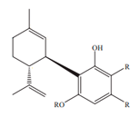

CBD
Primary Cannabinoid About Cannabidiol (CBD)
Cannabidiol, or CBD is second only to THC in terms of its abundance in the cannabis plant. With a boiling point of 356 degres fahrenheit, CBD has the ability to influence a wide range of receptor systems throughout the brain and the body, with zero psychoactivity (no affect on the mind) and a wide range of medical benefits. Among the most famous applications of CBD is the well-publicized success of using it to treat child epilepsy. Experiments have also revealed CBD to have powerful neuroprotective, anti-inflammatory and analgesic (pain-relieving) properties. It has also been shown to possess significant therapeutic value for the treatment of motivational disorders like depression, anxiety and addiction. Tests with trauma patients have shown that cannabidiol can improve people’s abilities to forget traumatic memories, indicating potential for treating a myriad of anxiety and stress disorders. Most recently, studies have shown CBD to inhibit tumor growth, successfully slowing the progression of multiple types of cancers, including tbreast, lung, prostate and colon.
CBD can increase the levels of naturally-occurring cannabinoids, or endocannabinoids, by inhibiting the enzymes that break down these compounds naturally. It counteracts the cognitive effects of THC by diminishing THC’s ability to activate the CB1 receptors, consequently reducing the potential for intoxication by a high THC strain. The most common ratios of THC to CBD are high, medium and low:
-High THC, low CBD (Example: 10%-30% THC, < 1% CBD) -Balanced THC and CBD (Example: 5%-15% THC and CBD) -Low THC, high CBD (Example: < 5% THC, 8%-20% CBD)
High-CBD strains tend to deliver very clear-headed, functional effects without the euphoric high associated with high-THC strains. They’re typically preferred by consumers who are extremely sensitive to the side effects of THC and require medicating throughout the day to control pain, inflammation, anxiety, or other chronic conditions. Balanced CBD/THC strains will provide a mellow buzz, bringing back a bit of that euphoric sensation loved by recreational users. In fact, many rec users seek out products with a good balance between THC and CBD, due to an expectation of a smoother and a more even high, while also ensuring an experience without anxiety, paranoia, or any other unwanted side effect of THC overdose.